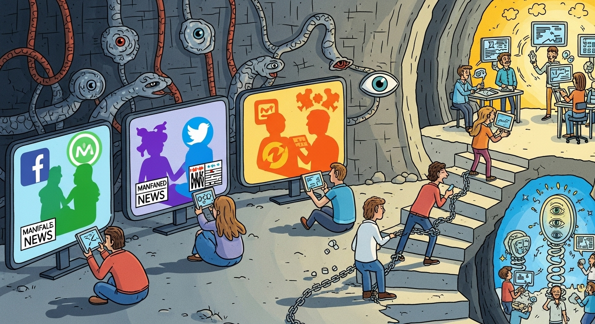

INTRODUÇÃO
A Inteligência Artificial (IA) tem sido discutida por todo o mundo, tanto no que tange aos aspectos éticos (Coeckelbergh, 2023) quanto econômicos, sociais e culturais (Kissinger, 2022) que sua adoção em escala pode causar na sociedade, mas o debate se tornou ainda mais acalorado a partir do surgimento de ferramentas como o ChatGPT (OpenAI, 2025), Gemini (Google, 2025) e o DeepSeek (Guo et al., 2025). Essas ferramentas, desenvolvidas por grandes empresas de tecnologia, tomaram o mundo de assalto graças à sua capacidade de gerar textos, imagens, vídeos e código de forma automática, o que trouxe benefícios como o aumento da produtividade e a democratização do acesso à informação, mas também levantou preocupações sobre o impacto que a IA pode ter na sociedade (Coeckelbergh, 2023).
A comoção gerada pelo salto tecnológico que a IA representa é compreensível, mas tem sido alimentada por exageros e desinformação, dificultando a compreensão do que realmente é a IA e como ela pode ser utilizada de forma ética e responsável. Conforme observa Kissinger (2022), a revolução digital e o avanço da IA condensaram drasticamente o tempo necessário para alterações tecnológicas impactarem nossa experiência de vida, produzindo fenômenos verdadeiramente inéditos, e não apenas versões aprimoradas de realidades já existentes. Isso nos impõe a necessidade de uma reflexão mais profunda sobre os impactos destas tecnologias na sociedade e nas relações humanas.
Neste cenário de transformações aceleradas, Coeckelbergh (2023) aborda a euforia tecnológica e os medos que permeiam a adoção irrestrita da IA, incluindo a possibilidade de uma singularidade tecnológica em que uma IA poderia assumir o controle da humanidade. O autor traça um paralelo com a história de Frankenstein, onde a criação do homem se volta contra ele (Shelley, 1818), alertando para os riscos de uma tecnologia que escapa ao controle humano. Esta narrativa de criador e criatura, quando observada pelo prisma filosófico, convida-nos a uma análise através da dialética hegeliana, não como mera oposição mecânica, mas como um processo de superação de contradições (Hegel, 2014).
Este movimento dialético se manifesta claramente no desenvolvimento da IA contemporânea, onde avanços tecnológicos geram, simultaneamente, seus próprios questionamentos éticos e sociais. Como explica Hegel (2014), “a verdade é o todo”, e a tensão resultante desse processo não representa apenas um conflito, mas um potencial caminho para uma síntese que transcenda as posições iniciais. Particularmente reveladora é a relação de poder que se estabelece entre a sociedade e as Big Techs, configurando uma inversão da clássica dialética do senhor e do escravo proposta por Hegel, na qual “a consciência-de-si é em si e para si quando e porque é em si e para si para uma Outra; quer dizer, só é como algo reconhecido” (Hegel, 2014).
As grandes empresas de tecnologia, concebidas em tese para oferecer serviços aos usuários, conquistaram gradualmente uma posição de dominação através da dependência tecnológica que fomentaram. Nessa dinâmica, enquanto os usuários consomem produtos e serviços digitais, cedem involuntariamente dados pessoais e atenção, transformando-se de “senhores” do consumo em “servos” de um sistema que monetiza sua existência digital e divide a sociedade em bolhas informacionais. Esta inversão dialética, que Hegel identificaria como um momento do “devir-outro” (Hegel, 2014), evidencia a complexidade das relações de poder na era digital e fundamenta a crescente demanda por regulação dessas tecnologias como um imperativo ético e social para o equilíbrio desta relação.
O contexto também nos remete à alegoria da caverna (Platão, 2021), onde prisioneiros, acorrentados desde o nascimento, tomam como realidade apenas as sombras projetadas na parede à sua frente. No contexto contemporâneo da IA, as Big Techs projetam uma realidade mediada por algoritmos, criando uma nova caverna digital onde os usuários, imersos em bolhas informacionais, consomem representações manipuladas do mundo. Assim como no mito platônico, onde o prisioneiro que se liberta e contempla o mundo real sofre ao retornar à caverna, aqueles que questionam os sistemas algorítmicos das Big Techs enfrentam resistência daqueles que estão imersos pela realidade criada pelas grandes corporações. A diferença é que, enquanto na alegoria as sombras são projeções de objetos reais, na caverna digital contemporânea, as “sombras” algorítmicas são construções intencionais baseadas em modelos de negócios, frequentemente desalinhadas com o bem comum. Como observa Coeckelbergh (2023), os algoritmos não são neutros, mas incorporam valores e prioridades de seus criadores, reforçando a necessidade de compreendermos criticamente a natureza dessas projeções que moldam nossa percepção da realidade.
O objetivo deste trabalho é analisar criticamente a relação entre as Big Techs e a sociedade contemporânea através de um arcabouço filosófico integrando a alegoria da caverna platônica, evidenciando como essas empresas, através de suas tecnologias de IA, exercem um poder que reconfigura nossa percepção da realidade. Busca-se, assim, não apenas denunciar os mecanismos de controle e manipulação algorítmica, mas também propor caminhos para uma síntese que permita à sociedade aproveitar os benefícios tecnológicos sem submeter-se completamente ao domínio das grandes corporações digitais, recuperando a autonomia individual e coletiva na era da inteligência artificial.
A CAVERNA DIGITAL
Não é possível falar sobre a relação entre as Big Techs e a sociedade sem abordar o conceito de “filtro bolha”, introduzido por (Pariser, 2021). Este conceito descreve como algoritmos de recomendação personalizam o conteúdo que os usuários veem, criando uma bolha informacional que limita a exposição a ideias e perspectivas divergentes, aprofundando a polarização e a fragmentação social. As Big Techs, ao priorizarem o engajamento e a retenção de usuários, alimentam essas bolhas, reforçando crenças existentes e dificultando o diálogo construtivo entre diferentes grupos sociais.
As bolhas tiveram um papel importante na ascensão de movimentos fascistas na última década, como o caso do Brexit no Reino Unido, a eleição de Donald Trump associado ao caso da Cambridge Analytica e a ascensão do Bolsonarismo no Brasil. Todos esses eventos foram impulsionados por campanhas de desinformação e manipulação algorítimica, que exploraram as vulnerabilidades cognitivas dos usuários para disseminar narrativas polarizadoras e extremistas.
Nada disso seria possível sem as Big Techs, que, ao priorizarem o lucro e o engajamento criaram um ambiente algorítmico propício para a disseminação de desinformação e teorias da conspiração. A falta de regulação e supervisão adequada permitiu que essas empresas operassem com pouca transparência, exacerbando os problemas sociais e políticos associados à polarização e à fragmentação informacional.
É importante salientar que quando falamos de IA não estamos nos referindo apenas ao ChatGPT, Gemini ou DeepSeek, mas a um conjunto de tecnologias que incluem algoritmos de recomendação, aprendizado de máquina e processamento de linguagem natural. Essas tecnologias são utilizadas pelas Big Techs para personalizar o conteúdo que os usuários veem, influenciando suas percepções e comportamentos (Coeckelbergh, 2023).
Platão, nos alerta sobre os perigos de aceitar passivamente as sombras projetadas na parede, sem questionar sua origem e significado. Da mesma forma, a sociedade contemporânea deve estar atenta às “sombras” digitais criadas pelas Big Techs e suas tecnologias de IA, que moldam nossa percepção da realidade e influenciam nossas decisões de forma muitas vezes invisível e insidiosa.
A discussão sobre a ética na inteligência artificial transcende os aspectos técnicos ou puramente filosóficos, apresentando-se como um desafio global que exige a consideração de diversas perspectivas e contextos interculturais. Como observa Coeckelbergh (2023), a IA e suas inovações permeiam cada vez mais nossa vida cotidiana, incorporadas em sistemas tecnológicos complexos com aplicações que abrangem múltiplos domínios como transporte, saúde, finanças e segurança. Entre as implicações mais proeminentes, destacam-se as questões de viés e discriminação algorítmica, os desafios relacionados à privacidade e proteção de dados pessoais, e a complexidade em atribuir responsabilidade por decisões tomadas por sistemas de IA.
A implementação generalizada dessas tecnologias levanta ainda questões sobre a transparência e explicabilidade dos algoritmos, o impacto transformador no futuro do trabalho e a potencial aumento das desigualdades sociais existentes. Esta dinâmica reflete mais uma faceta da inversão dialética discutida anteriormente, onde tecnologias supostamente criadas para nos servir acabam por moldar profundamente a sociedade e a política, frequentemente de formas imprevisíveis e nem sempre benéficas. Em sintonia com a alegoria, compreender criticamente essas “sombras algorítmicas” e suas implicações éticas torna-se imperativo para garantir que os sistemas de IA sejam desenvolvidos e utilizados de maneira responsável, promovendo um mundo mais justo e equânime, ao invés de simplesmente reproduzir ou intensificar as estruturas de poder existentes, tolindo a autonomia e a liberdade dos indivíduos.
DIALÉTICA DO PODER TECNOLÓGICO
A relação entre a sociedade contemporânea e as Big Techs pode ser compreendida de maneira mais profunda através da dialética hegeliana, revelando dimensões que transcendem a simples análise tecnológica. Para Hegel (2014), o movimento dialético não se resume a meras oposições, mas constitui um processo pelo qual as contradições são superadas em direção a uma síntese superior. No contexto das tecnologias digitais, esta dinâmica se manifesta claramente no desenvolvimento e implementação da IA.
As grandes corporações tecnológicas surgiram como ferramentas aparentemente a serviço da humanidade, mas desde seu início já carregavam em si a contradição de serem, simultaneamente, entidades que buscam o controle e a monetização da experiência humana. Esta contradição interna, típica do movimento dialético hegeliano, foi se intensificando à medida que essas empresas expandiram seu poder e influência. Como observa Hegel, “o botão desaparece no desabrochar da flor, e poderia dizer-se que a flor o refuta; do mesmo modo que o fruto faz a flor parecer um falso ser-aí da planta” (Hegel, 2014). De maneira análoga, cada evolução tecnológica revela e amplia as contradições presentes desde o início.
Na dialética do senhor e do escravo, o senhor depende do reconhecimento do escravo, assim como as Big Techs dependem da participação dos usuários. Porém, diferentemente da narrativa hegeliana clássica onde o escravo adquire consciência através do trabalho, o que observamos é um processo inverso: os usuários, em tese senhores do seu consumo digital, são progressivamente alienados e objetificados pela dependência tecnológica, enquanto as Big Techs consolidam seu poder através do controle de dados e atenção. Como Hegel observa, “a verdade da consciência independente é a consciência servil” (Hegel, 2014), mas aqui esta verdade se manifesta na crescente dependência dos usuários em relação às plataformas digitais.
O que torna esta análise relevante é que ela nos permite vislumbrar não apenas o problema, mas também potenciais caminhos para sua superação. A síntese dialética hegeliana pressupõe que as contradições entre o poder tecnológico e a autonomia humana podem ser superadas através de um novo arranjo das relações sociais. Observamos indícios dessa possível superação nas crescentes demandas por regulação das Big Techs, no surgimento de movimentos pela soberania digital e na conscientização dos usuários sobre os mecanismos de manipulação algorítmica e movimentos contra armas controladas por IA, como o #StopKillerRobots.
Porém, como alertaria Schopenhauer (1819), essa visão pode representar um otimismo ingênuo diante das forças do capitalismo digital. Para Schopenhauer, a Vontade, força irracional que impulsiona todas as coisas, é insaciável e, uma vez que as Big Techs encarnam essa vontade de poder na esfera digital, qualquer tentativa de regulação seria inevitavelmente contornada por novas formas de dominação tecnológica. “O mundo é minha representação”, afirmava o filósofo, e no contexto atual, são as corporações tecnológicas que controlam essas representações, determinando o que é visível e o que permanece oculto.
Esta análise encontra ressonância na perspectiva de Foucault (1979) sobre os mecanismos de poder, que evoluíram da sociedade disciplinar para formas mais sutis e eficazes de controle. Se nas instituições disciplinares o poder era exercido de forma explícita, na era digital ele opera através do que Foucault chamaria de “governamentalidade algorítmica”, uma forma de biopoder que não apenas controla corpos, mas modula desejos e comportamentos através de dados. As Big Techs, dentro desta ótica foucaultiana, representam a materialização de um poder que não precisa mais recorrer à coerção, pois opera através da sedução e da personalização, criando a ilusão de liberdade enquanto implementam mecanismos sofisticados de vigilância e controle.
Han (2017) complementa esta análise ao identificar uma transição da sociedade disciplinar foucaultiana para o que ele chama de “sociedade do desempenho”, onde o paradigma neoliberal transforma cada indivíduo em “empresário de si mesmo”. Na sociedade digital atual, observa Han, “a liberdade provará ser apenas uma forma específica de coerção”, pois o imperativo da autoexploração é mais eficiente que a exploração por terceiros. As Big Techs, ao oferecerem plataformas de “auto-realização” e “conexão social”, implementam o que Han chama de “psicopolítica digital”, uma forma de poder que não confronta a liberdade, mas a explora como matéria-prima. “A psicopolítica digital se apodera da conduta social das massas”, adverte Han (2018), “pois captura e processa seu comportamento a nível pré-reflexivo”, estabelecendo uma forma de dominação que atua através da sedução e do aliciamento da consciência, numa mercantilização total da atenção e dos dados.
Han aprofunda esta discussão ao analisar o papel específico do Big Data como ferramenta central da psicopolítica digital. O filósofo considera o Big Data um instrumento psicopolítico extremamente eficiente que possibilita um conhecimento sobre a dinâmica social (Han, 2018), representando uma ameaça fundamental à noção de pessoa como agente autônomo. Para Han, o dataísmo constitui uma espécie de segunda Ilustração, que eleva o conhecimento baseado em dados como única forma legítima de saber, reduzindo pessoas a pacotes de dados quantificáveis e previsíveis. Em sua visão, vivemos hoje como se estivéssemos constantemente sendo avaliados, numa sociedade onde cada interação digital é registrada, analisada e monetizada. Este processamento massivo de dados não apenas monitora comportamentos, mas os molda ativamente através de intervenções algorítmicas personalizadas, desenvolvendo uma psicopolítica preditiva que antecipa desejos e neutraliza resistências antes mesmo que se formem na consciência do sujeito. Assim, a aparente liberdade de escolha no ambiente digital mascara um condicionamento profundo, onde o comportamento é sutilmente direcionado por arquiteturas de escolha invisíveis, desenhadas para maximizar o engajamento e a extração de valor.
Entre a potencial emancipação hegeliana, o pessimismo schopenhaueriano, a governamentalidade algorítmica foucaultiana e a psicopolítica digital de Han, encontra-se o atual impasse da sociedade digital: regulamentar sem neutralizar a inovação, criticar sem ser absorvido pelo sistema (identitarismo extremo), e resistir sem renunciar aos benefícios das tecnologias que se tornaram essenciais à vida contemporânea.
À luz da análise filosófica desenvolvida, evidencia-se um paradoxo na relação de poder entre usuários e Big Techs: formalmente, os usuários seriam os “senhores”, uma vez que as plataformas dependem de sua adesão e dados para existir; materialmente, contudo, as Big Techs ocupam a posição dominante, configurando uma inversão da dialética hegeliana tradicional. Diferentemente da narrativa original de Hegel, onde o escravo, através do trabalho, desenvolve autoconsciência e potencial emancipatório, no ecossistema digital contemporâneo ocorre o contrário: os usuários, ao interagirem com plataformas digitais, experimentam crescente alienação e dependência. Como observaria Foucault (Foucault, 1979), esta nova configuração de poder não opera pela repressão explícita, mas pela modulação de desejos e comportamentos através da governamentalidade algorítmica, tornando-a mais eficaz justamente por sua aparente invisibilidade.
A pergunta sobre quem é verdadeiramente o senhor e quem é o escravo recebe, portanto, uma resposta complexa que transcende a simples dicotomia. Como sugere Han (2018), hoje cada um é seu próprio senhor e escravo, pois o sujeito da sociedade do desempenho explora a si mesmo voluntariamente, num regime de autoexploração mais eficiente que qualquer coerção externa. As Big Techs, neste cenário, não precisam exercer dominação direta, basta fornecerem a infraestrutura para que os usuários se autoexplorem na busca incessante por visibilidade, conexão e validação social. Esta configuração representa, como alertaria Schopenhauer (1819), a manifestação digital da vontade insaciável que caracteriza a existência humana, agora amplificada e monetizada pelas plataformas tecnológicas num ciclo aparentemente irrefreável de desejos e gratificações temporárias. A emancipação, se possível, dependeria não apenas de regulação externa, mas fundamentalmente do desenvolvimento de uma autoconsciência digital que permita aos usuários reconhecerem e potencialmente romperem com os mecanismos de controle algorítmico que moldam sua percepção e comportamento.
PARA ALÉM DA CAVERNA DIGITAL: CAMINHOS DE EMANCIPAÇÃO
A complexa relação entre humanos e tecnologia na era digital encontra uma metáfora na música “Symphony of Destruction” da banda Megadeth, onde “dançamos como marionetes” conduzidos por forças invisíveis (Megadeth, 1992). Esta imagem dialoga diretamente com a psicopolítica de Han e a governamentalidade algorítmica de Foucault, revelando como, sem recorrer à coerção explícita, as Big Techs orquestram sutilmente o comportamento coletivo. O paradoxo central desta relação é que quanto mais os usuários se convencem de sua soberania digital, mais profundamente se enredam nas arquiteturas invisíveis projetadas para capturar sua atenção e dados.
A transformação das startups idealistas em verdadeiros impérios informacionais reflete o movimento dialético hegeliano em sua expressão contemporânea. As promessas iniciais de democratização do conhecimento, conexão global e empoderamento individual gradualmente revelaram sua antítese: a formação de monopólios digitais, a fragmentação social em bolhas algorítmicas e uma dependência tecnológica que corrói a autonomia. Este processo não ocorre por imposição externa, mas através de mecanismos sedutores que exploram vulnerabilidades cognitivas e desejos humanos básicos, configurando o que Schopenhauer reconheceria como uma manifestação contemporânea da vontade insaciável.
A condição do usuário contemporâneo revela-se particularmente problemática quando observamos o gradual enfraquecimento de sua capacidade crítica. Cada vez mais imerso em estímulos personalizados e gratificações instantâneas, o indivíduo experimenta o que Han descreve como psicopolítica digital, uma forma de poder que não confronta a liberdade, mas a explora como matéria-prima. As fraturas sociais resultantes da polarização algorítmica, a proliferação da desinformação e a erosão do debate público evidenciam os limites deste modelo, sugerindo que a atual configuração das relações entre humanos e tecnologia aproxima-se de um ponto crítico.
Paulo Freire, oferece ferramentas para pensarmos caminhos de emancipação que podem ser interpretadas à luz do ambiente digital. Para ele, a libertação nunca é um processo imposto de cima para baixo, mas emerge da conscientização e ação coletiva dos próprios oprimidos. “Ninguém liberta ninguém, ninguém se liberta sozinho: os homens se libertam em comunhão” (Freire, 1996) isto sugere que a superação das atuais relações de poder no ecossistema digital não virá primariamente da regulação estatal, mas de movimentos educativos e organizativos que permitam aos usuários reconhecerem sua condição ambivalente e agirem coletivamente para transformá-la.
Emerge assim, da convergência das abordagens filosóficas analisadas, uma possível síntese dialética que transcende tanto a rejeição tecnofóbica quanto a aceitação acrítica das inovações digitais. Esta síntese materializa-se na possibilidade de uma relação consciente e transformadora com as tecnologias, onde os usuários, à semelhança dos prisioneiros libertos da caverna platônica, desenvolvem a capacidade de distinguir entre as sombras algorítmicas e a realidade que estas representam ou distorcem. Tal emancipação dependeria fundamentalmente de um processo de “conscientização”, uma alfabetização digital crítica que permita aos indivíduos compreenderem os mecanismos pelos quais os algoritmos moldam suas percepções.
Isto exigiria não apenas reconhecer a vontade insaciável que caracteriza o capitalismo digital, mas também criar novos modelos organizacionais e regulatórios que democratizem o controle sobre a infraestrutura tecnológica. O dataísmo questionado por Han, que reduz a experiência humana a padrões quantificáveis, encontraria seu contraponto não na rejeição dos dados em si, mas na recuperação da dimensão qualitativa e intersubjetiva da experiência digital. Como nos lembra Freire, “não há saber mais ou saber menos: há saberes diferentes” (Freire, 1996) e talvez seja precisamente na pluralidade epistemológica, para além do reducionismo algorítmico, que possamos construir coletivamente uma tecnologia que sirva genuinamente ao florescimento humano em vez de à mera extração de valor.